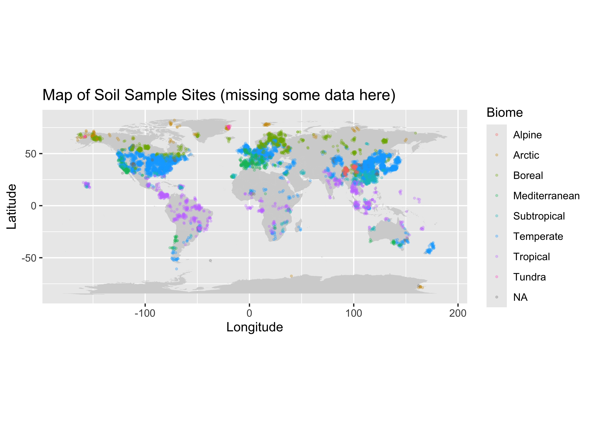
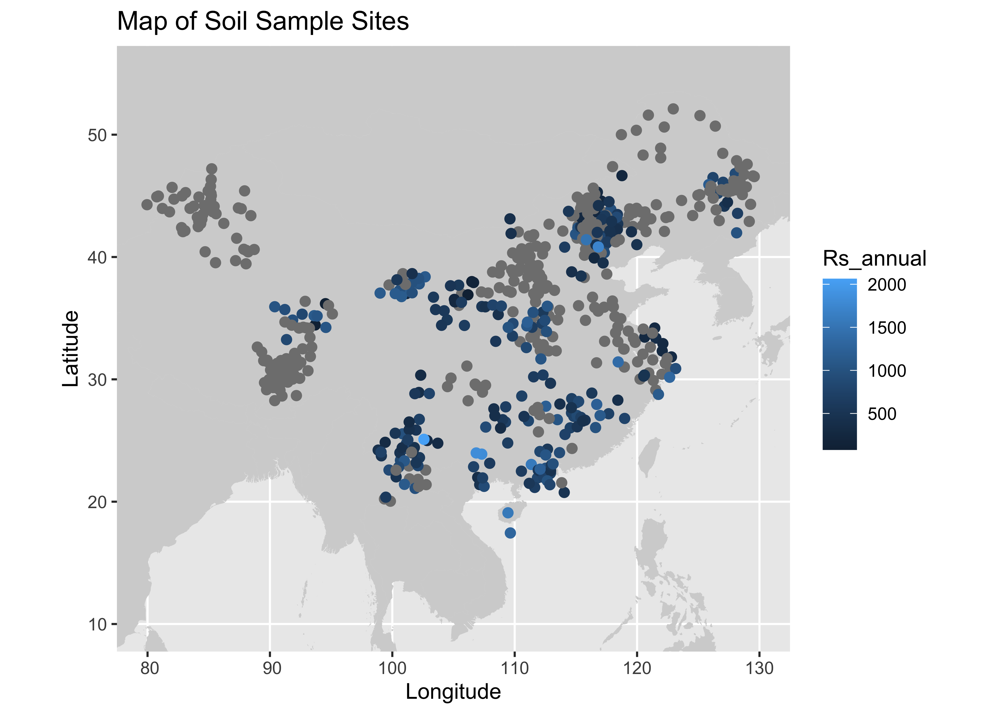

Choosing a Subset
# Set CRAN mirror directly
options(repos = "https://cloud.r-project.org")
# Now try installing the package
install.packages("plyr")##
## The downloaded binary packages are in
## /var/folders/q0/_0myr3tj3l986yfxrwn5xvbm0000gn/T//RtmpfQoWum/downloaded_packages## Linking to GEOS 3.11.0, GDAL 3.5.3, PROJ 9.1.0; sf_use_s2() is TRUELets take a look at where the sample are from:
background_map <- map_data("worldHires")
soil_data <- read_csv("SRDB_V5_1827/data/srdb-data-V5.csv")## Warning: One or more parsing issues, call `problems()` on your data frame for details, e.g.:
## dat <- vroom(...)
## problems(dat)## Rows: 10366 Columns: 85
## ── Column specification ─────────────────────────────────────────────────────────────────────────────────
## Delimiter: ","
## chr (23): Entry_date, Author, Quality_flag, Contributor, Country, Region, Site_name, Site_ID, Manipul...
## dbl (62): Record_number, Study_number, Duplicate_record, Study_midyear, YearsOfData, Latitude, Longit...
##
## ℹ Use `spec()` to retrieve the full column specification for this data.
## ℹ Specify the column types or set `show_col_types = FALSE` to quiet this message.#adding our map:
RS_mean = mean(soil_data$Rs_annual)
ggplot() +
geom_polygon(data = background_map, aes(x = long, y = lat, group = group), fill = "lightgrey") +
geom_point(data = soil_data, aes(x = Longitude+rnorm(n=nrow(soil_data)), y = Latitude+rnorm(nrow(soil_data)), color=Biome), size = 0.5, alpha=.25, shape=4) +
coord_fixed() +
labs(title = "Map of Soil Sample Sites", x = "Longitude", y = "Latitude") ## Warning: Removed 383 rows containing missing values or values outside the scale range (`geom_point()`).
#getting the frequency of different countries:
country_counts <- count(soil_data, 'Country')
head(country_counts)## Country freq
## 1 Africa 1
## 2 Algeria 2
## 3 Antarctic 2
## 4 Antarctica 7
## 5 Arctic 1
## 6 Argentina 20#lets sort them to see the most frequent countries:
attach(country_counts)
country_counts_sorted <- country_counts[order(-freq),]
head(country_counts_sorted)## Country freq
## 22 China 3038
## 108 USA 2666
## 19 Canada 556
## 55 Japan 299
## 38 Finland 277
## 82 Russia 231We can visualize this with a barplot:
#create barplot:
top_5 <- country_counts_sorted[1:5,]
y_top_5 <- top_5[['freq']]
x_top_5 <- top_5[['Country']]
barplot(y_top_5, names.arg=x_top_5, horiz=TRUE, xlab = 'Frequency', main = 'Top 5 Countries Represented', las = 1, col = 'darkgreen') We see here that China and the USA make up a very large part of this
data set. I want to see which of the two has the lowest percentage of
missing values, then I will choose that subset of the data to work
on:
We see here that China and the USA make up a very large part of this
data set. I want to see which of the two has the lowest percentage of
missing values, then I will choose that subset of the data to work
on:
Subsetting China and USA:
First we will only grab Countries China and USA:
And we can now see which has a lower percentage of missing values, we will also look at the distribution of quality flags for each group, because this will give us a better idea about the nature of information contained there:
china <- china_usa[china_usa$Country == "China",]
percent_missing_china <- mean(is.na(china)) * 100
percent_missing_china## [1] 60.31677Lets now look at the percent missing from USA:
usa <- china_usa[china_usa$Country == "USA",]
percent_mising_usa <- mean(is.na(usa)) * 100
percent_mising_usa## [1] 60.91479Great we can see that china has a lower percentage of missing data.
#Inspection of Quality Flags: For reference we can describe each
quality flag as follows:
Q0 default/none
Q01 estimated from figure
Q02 data from another study
Q03 data estimated–other
Q04 potentially useful future data
Q10 potential problem with data
Q11 suspected problem with data
Q12 known problem with data
Q13 duplicate
Q14 inconsistency
Lets take a look at the distribution of flags for each group:
## Quality_flag freq
## 1 Q01 529
## 2 Q01,Q10 3
## 3 Q02 21
## 4 Q03 24
## 5 Q03,Q10 1
## 6 Q1 5
## 7 Q10 38
## 8 Q10,Q13 7
## 9 Q11 8
## 10 Q13 90
## 11 Q16 16
## 12 <NA> 1924## Quality_flag freq
## 1 Q01 529
## 2 Q01, Q11 15
## 3 Q02 7
## 4 Q03 37
## 5 Q1 90
## 6 Q10 10
## 7 Q11 1
## 8 Q11,Q12 4
## 9 Q11,Q14 3
## 10 Q12 1
## 11 Q13 3
## 12 Q15 2
## 13 Q16 12
## 14 <NA> 2324Alright we can pretty easily see that China has more data, and lest potental problems with the quality of each observation.
Moving Forward with the China Subset:
The next step is cleaning the data, addressing missing values, and selecting our features of interest.
The first thing we will do is select data in China with Quality flags = Q0 (or none), Q1, Q2, and Q3. I feel it would be potentially misleading or problematic to keep observations with the other QF’s, we will then save as a data set and move on the the cleaning and feature selection section!
ok_flags = c(NULL, "Q01", "Q1", "Q02", "Q03")
china_soil_respiration <- soil_data[(soil_data$Country == "China") & (soil_data$Quality_flag %in% ok_flags), ]
head(china_soil_respiration)## # A tibble: 6 × 85
## Record_number Entry_date Study_number Author Duplicate_record Quality_flag Contributor Country Region
## <dbl> <chr> <dbl> <chr> <dbl> <chr> <chr> <chr> <chr>
## 1 276 2008-10-24 3653 Wang NA Q02 BBL China <NA>
## 2 277 2008-10-24 3653 Wang NA Q02 BBL China <NA>
## 3 278 2008-10-24 3653 Wang NA Q02 BBL China <NA>
## 4 279 2008-10-24 3653 Wang NA Q02 BBL China <NA>
## 5 280 2008-10-25 3653 Wang NA Q02 BBL China <NA>
## 6 281 2008-10-25 3653 Wang NA Q02 BBL China <NA>
## # ℹ 76 more variables: Site_name <chr>, Site_ID <chr>, Study_midyear <dbl>, YearsOfData <dbl>,
## # Latitude <dbl>, Longitude <dbl>, Elevation <dbl>, Manipulation <chr>, Manipulation_level <chr>,
## # Age_ecosystem <dbl>, Age_disturbance <dbl>, Species <chr>, Biome <chr>, Ecosystem_type <chr>,
## # Ecosystem_state <chr>, Leaf_habit <chr>, Stage <chr>, Soil_type <chr>, Soil_drainage <chr>,
## # Soil_BD <dbl>, Soil_CN <dbl>, Soil_sand <dbl>, Soil_silt <dbl>, Soil_clay <dbl>, MAT <dbl>,
## # MAP <dbl>, PET <dbl>, Study_temp <dbl>, Study_precip <dbl>, Meas_method <chr>, Collar_height <dbl>,
## # Collar_depth <dbl>, Chamber_area <dbl>, Time_of_day <chr>, Meas_interval <dbl>, …#Map of New Dataset:
#adding our map:
#Note the added random noise to see points clustered together at simmilar or the same tesing sites
ggplot() +
geom_polygon(data = background_map, aes(x = long, y = lat, group = group), fill = "lightgrey") +
geom_point(data = china_soil_respiration, aes(x = Longitude+rnorm(n=nrow(china_soil_respiration)), y = Latitude+rnorm(n=nrow(china_soil_respiration)), color=Rs_annual), size = 2) +
coord_sf(xlim = c(80, 130), ylim = c(10, 55)) +
labs(title = "Map of Soil Sample Sites", x = "Longitude", y = "Latitude")## Warning: Removed 24 rows containing missing values or values outside the scale range (`geom_point()`).
Now lets export this and move on to the next section: Data Cleaning and Feature Selection